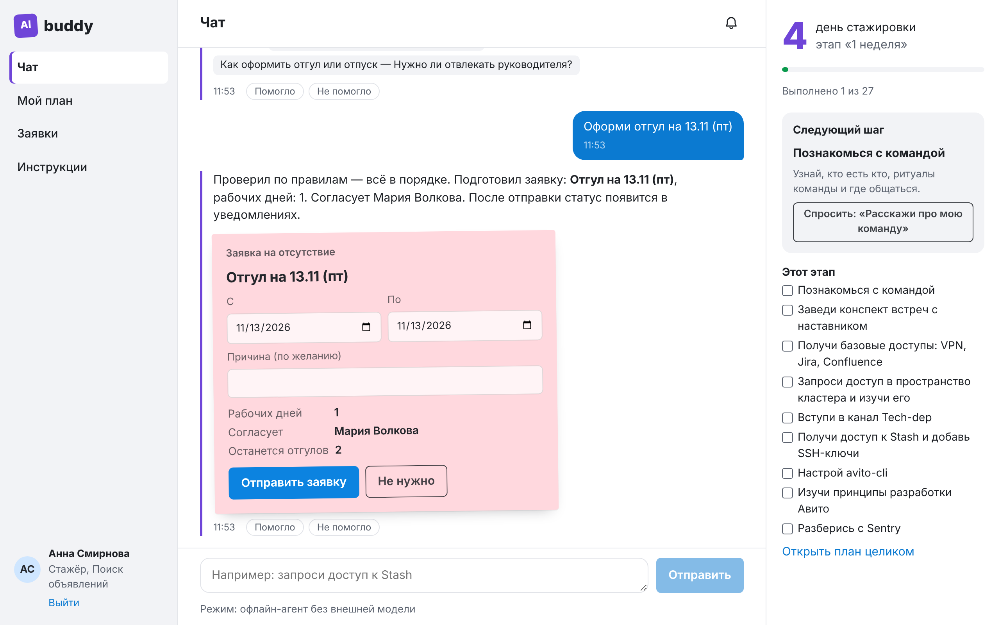
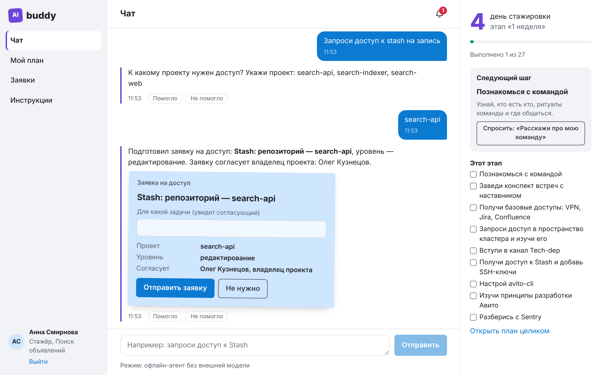
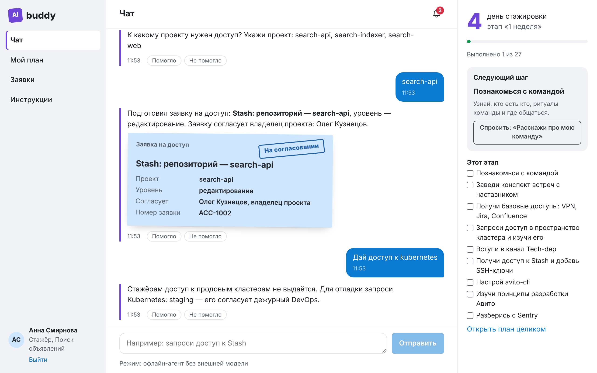
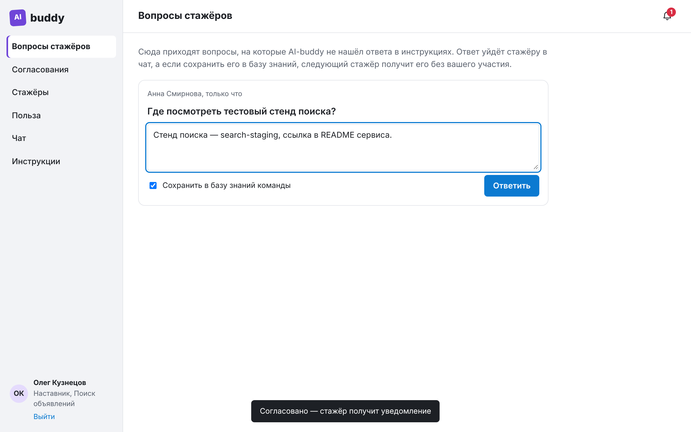
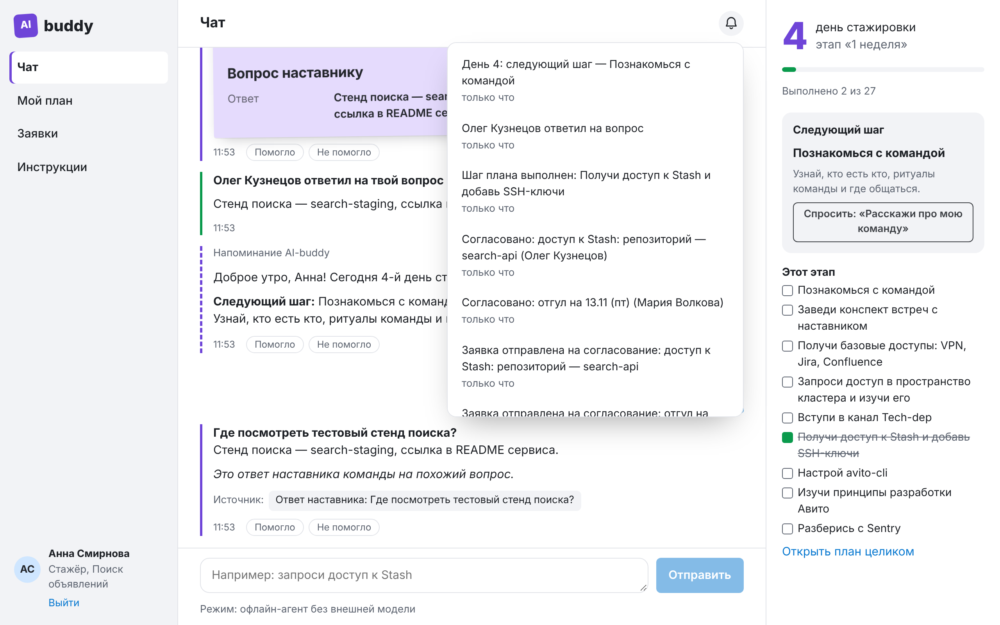
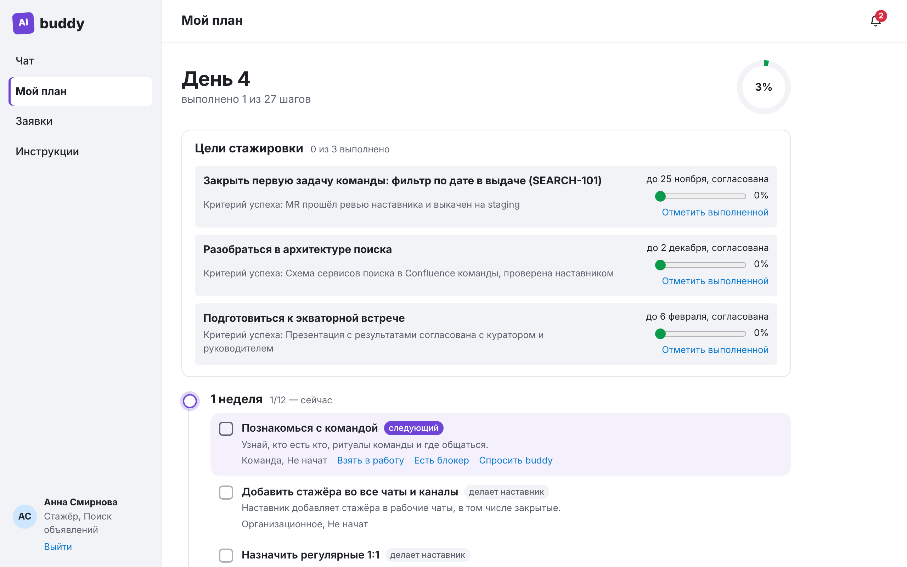
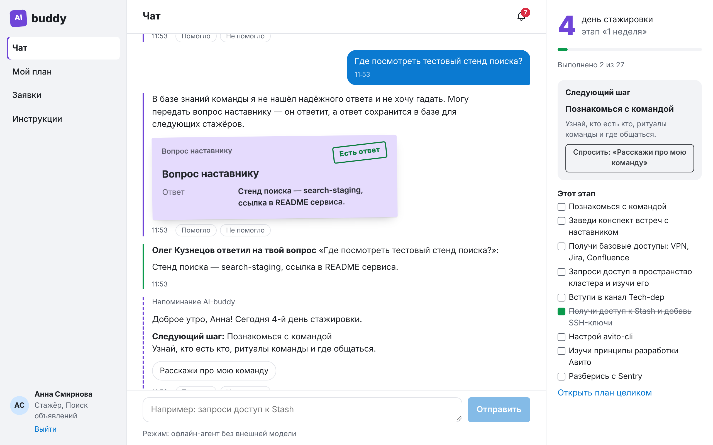
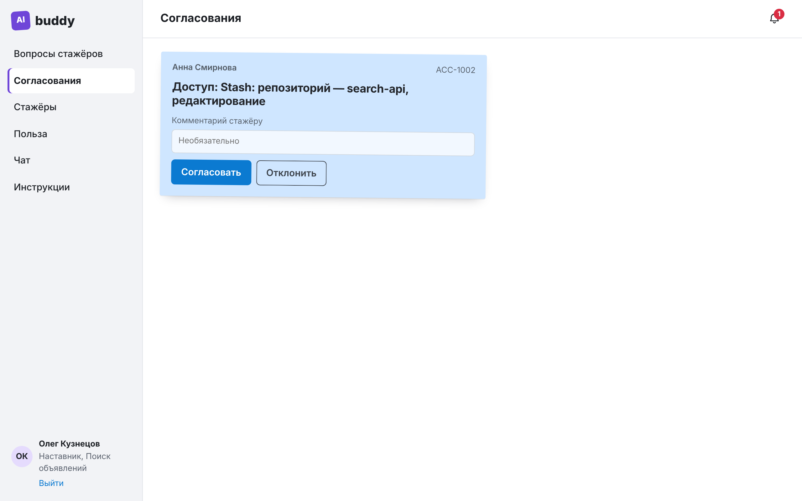
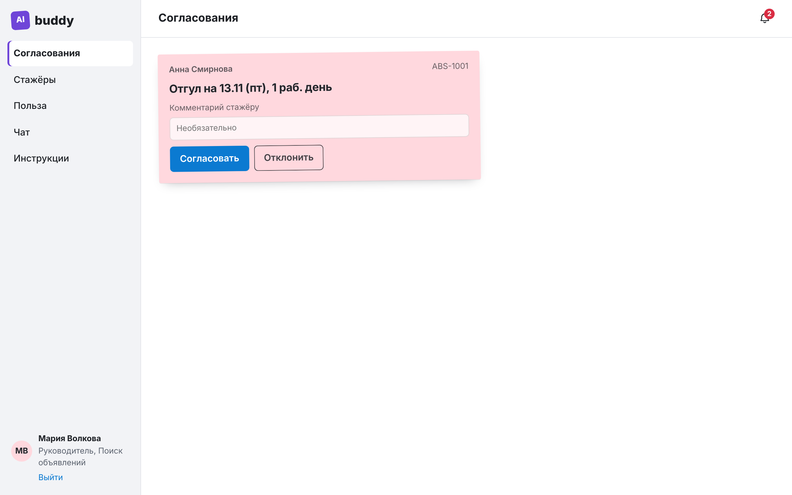
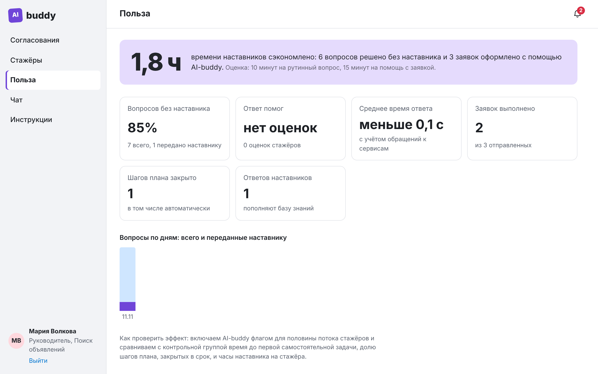

ИИ-наставник, который отвечает стажёру по инструкциям команды, ведёт по плану адаптации и оформляет заявки в корпоративных сервисах — стажёру остаётся нажать «Отправить».
Команда
Нейрослопики
Кейс
Авито, Hack&Change 2026
Видеодемонстрация и код
github.com/VV00nder/ai-buddy-hack-and-change-2026
видео: docs/demo/ai-buddy-demo.mp4
40–48 ч
наставника на 6-месячную программу
55–65 ч
на 9-месячную программу
Оценка команды Авито: время уходит на 1:1, работу с куратором, обучение, ревью компетенций, обратную связь, экватор и выпускной. Цель AI-buddy — снять организационную рутину внутри этих активностей, не заменяя содержательную работу наставника.
2Вопрос своими словами — короткий ответ из инструкции команды и раздел-источник. Нет ответа — честно говорит и передаёт вопрос наставнику.
План адаптации по чек-листу Авито: день, этап, следующий шаг, просрочки. Шаги закрываются сами, когда выдан нужный доступ.
Отгул и доступы через корпоративные сервисы: проверяет правила, готовит черновик. Отправка — только кнопкой стажёра.
Наставник и руководитель остаются в контуре: отвечают на вопросы, которых нет в инструкциях, согласуют заявки и видят прогресс.
3| Этап | Где трудно | Сценарий AI-buddy |
|---|---|---|
| 1 неделя | Какие доступы нужны, кто согласует; где инструкции по avito-cli и ключам Stash | Доступы с персональными статусами; ответы с источником |
| 2 неделя | Что делать дальше и что уже сделано | План адаптации и «следующий шаг», кнопка «Спросить buddy» |
| 1–2 месяц | Организационные вопросы: отгул под сессию, практика | Отгул с проверкой правил; ответы по инструкциям |
| Всегда | Вопрос, которого нет в инструкциях | Вопрос наставнику, ответ сохраняется в базу знаний команды |
| 1 неделя | Неясно, что считается успехом стажировки | Цели с критериями успеха от руководителя, прогресс в плане |
| Руководитель | Сколько времени уходит, где застрял стажёр | Согласования в один клик, прогресс стажёров и целей, напоминания, метрики пользы |
27 шагов плана на 6 этапов построены по обоим листам чек-листа из кейса («Материалы для всех» и «Чек-лист Backend»).
4dry_run) и показывает черновик


В заявке проект, уровень прав и обоснование. Репозиторий согласует владелец проекта, staging — DevOps, Confluence кластера — руководитель.
Продовый Kubernetes и администрирование стажёру не положены: отказ даёт сам сервис, AI-buddy предлагает альтернативу.
AI-buddy не гадает: «не нашёл в инструкциях, могу передать наставнику»
Видит вопросы всех стажёров в одном месте и отвечает
Ответ уходит стажёру в чат и сохраняется в базу знаний команды
Похожий вопрос закрывается сразу с пометкой «ответ наставника команды»





Утром стажёр получает сводку: день, новый этап, просрочки и следующий шаг с кнопкой-вопросом.
Заявка на репозиторий пришла владельцу проекта. Если она или вопрос наставнику ждут больше суток — ИИ-крон напомнит. Крон вызывает POST /api/cron/reminders.


Доля вопросов без наставника, сэкономленные часы (10 мин на рутинный вопрос, 15 мин на помощь с заявкой), оценки ответов, выполненные заявки и шаги плана.
10React 19 · TypeScript · TanStack Query · Zustand · Zod
↕ REST + SSE
сессии · агент (LLM / офлайн) · план · заявки · вопросы · метрики
история, заявки, план, FAQ, события
сессии, rate limit
↕ MCP, токен пользователя
SSO · справочник · отсутствия · доступы (имитация)
| В прототипе | В Авито | Что меняется |
|---|---|---|
| mock-SSO, токен личности | Авторизация и ролевая модель | Проверка корпоративного токена вместо mock; токен по-прежнему идёт в сервисы |
| MCP-имитации сервисов | Отсутствия, доступы, данные сотрудников | MCP-адаптеры с тем же контрактом; командировки, найм, бенефиты — новыми серверами |
| Агент в коде AI-buddy | Платформа ИИ-агентов с промптами и MCP | Промпт и правила переносятся из спецификации агента |
FF_* из окружения | Feature flags | Точки проверки уже выделены в сервисном слое |
Таблица events | Clickstream, Kafka | Sink для плоских событий type, userId, props, at |
/metrics | Grafana | Scrape: события и гистограмма времени ответа агента |
/api/cron/reminders | Внутренний ИИ-крон | Вызов по расписанию со служебным токеном; встроенный таймер отключается |
База знаний фильтруется до LLM. Инструменты — по роли через tools/list. Каждый сервис перепроверяет токен: чужой руководитель не согласует заявку.
Модель вызывает запись только с dry_run=true — это выставляет код. Отправка — кнопкой человека. Служебные поля не редактируются.
Модель недоступна — офлайн-резерв. Сервис упал — черновик сохраняется, повтор после восстановления. Правила изменились — понятная причина.
94,8%
покрытие строк бэкенда (Go), 50 тестов
90,9%
покрытие фронтенда (React/TS), 19 тестов
17/17
проверок e2e-сценария по трём ролям в Playwright
docker compose up --build — стенд; --profile test — тесты с PostgreSQL и Redis и отчёты о покрытииAI-buddy включается feature flag для половины команд потока, вторая половина — контроль. Рандомизация по командам, чтобы не смешивать наставников.
Часы наставника на стажёра за первые 4 недели.
Раскатываем, если часы наставника снижаются, а время до первой задачи и CSAT не хуже контроля.
15Confluence команды с правами пространств; новые сервисы через MCP: командировки, бенефиты, согласия
Агент по событиям корпоративных сервисов: заявка согласована — следующий шаг; завтра экватор — чек-лист подготовки
Бот в корпоративном мессенджере и push-уведомления PWA — клиенты того же API, агент не меняется
Черновик обратной связи по плану, напоминания о 1:1; после онбординга — точка входа для рабочих вопросов
Код, инструкции запуска и видео: github.com/VV00nder/ai-buddy-hack-and-change-2026
Тестовые входы: anna, oleg, maria, pavel, ivan, elena — пароль buddy2026. Без ключа LLM работает офлайн-агент.